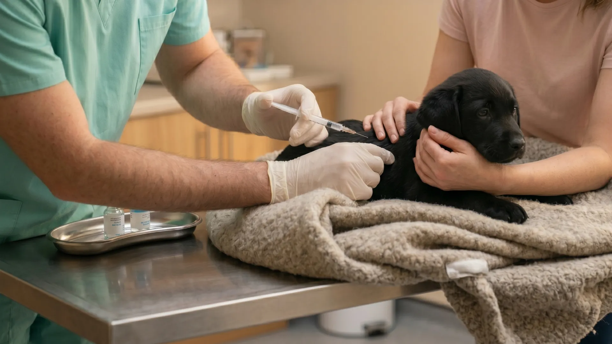

Eläinlääkäripalvelut
Olemme täällä lemmikkiäsi varten kaikissa elämänvaiheissa ympäri vuorokauden, vuoden jokaisena päivänä.
Varaa aikaVastaanotto
Klinikkamme sijaitsee Tampereella hyvien yhteyksien varrella osoitteessa: Kuntokatu 3, 33520 Tampere.
Eläinlääkärimme ottavat vastaan koirat, kissat ja pieneläimet. Vastaanotolla selvitämme lemmikkisi voinnin perusteellisesti ja suunnittelemme yhdessä sopivan hoidon.
Ei-kiireelliset asiat: varaa aika verkossa tai soita vastaanottoaikana numeroon 010 123 4567.
Kiireellisissä tapauksissa tavoitat meidät päivystysnumerosta 0600 123 45 vuorokauden ympäri.
Hammashoito
Suun terveys on tärkeä osa lemmikkisi kokonaisvaltaista hyvinvointia. Lemmikin hyvä suuhygienia kotona ja säännölliset eläinlääkärin tarkastukset ehkäisevät vakavia terveysongelmia, kuten ientulehdusta, parodontiittia eli hampaan ien- ja tukikudoksen vakava-asteista tulehdusta ja jopa hampaiden menetystä.
Säännölliset eläinlääkärin tarkastukset ovat tärkeä osa lemmikin terveysdenhoitoa, sillä suun sairaudet voivat aiheuttaa kipua ja heikentää lemmikkisi elämänlaatua huomaamatta, sillä eläimet eivät osaa aina ilmaista kipua tai piilottavat sitä.
Tarjoamme hammashuoltoa hammaskiven poistosta aina vaativampiin kirurgisiin toimenpiteisiin.
Epäiletkö hammasongelmaa tai askarruttaako lemmikkisi suuhygieniaan liittyvät asiat? Tule käymään, autamme mielellämme.
Kirurgia
Ammattitaitoiset eläinlääkärimme suorittavat sekä suunnitellut että kiireelliset leikkaukset turvallisessa ympäristössä. Anestesia valitaan aina tehtävän toimenpiteen ja potilaan mukaan. Pidämme huolen parhaasta mahdollisesta kivunlievityksestä.
Pidämme sinut ajan tasalla koko hoitoprosessin ajan, jotta voit luottaa lemmikkisi olevan hyvissä käsissä.
Rokotukset
Säännölliset rokotukset suojaavat lemmikkiäsi vakavia tauteja vastaan.
Rokotukset on tärkeää pitää ajan tasalla. Pentuna ja nuorena annetut rokotteet eivät anna elinikäistä suojaa ja etenkin seniorilemmikkien rokotuksista tulisi huolehtia, sillä sairaudet voivat aiheuttaa niille vakavampia oireita.
Myös sisäkissojen ja koirien, jotka eivät tapaa muita koiria, rokotukset ovat tärkeitä, sillä omistajat voivat kantaa taudinaiheuttajia kotiin esimerkiksi kengänpohjissa.
Ennen rokotusta eläinlääkäri tekee aina terveystarkistuksen, koska lemmikin tulee olla terve saadakseen rokotuksen. Muistutamme sinua myös seuraavasta rokotusajasta.
Mikrosirut
Tunnistusmerkintä eli mikrosiru toimii lemmikkisi henkilöllisyystodistuksena. Sen avulla lemmikkisi voidaan rekisteröidä ja mahdollisen katoamisen sattuessa se löytää helpommin tiensä kotiin. Mikrosiru on noin riisinjyvän kokoinen ja asetetaan paikoilleen hellästi terävän, onton neulan avulla.
Tunnistusmerkintä ja rekisteröinti Ruokaviraston Koirarekisteriin on pakollinen kaikille koirille. Rotukoirat tulee rekisteröidä myös Kennelliiton rekisteriin. Koirille siru asetetaan ensisijaisesti koiran lapaluiden väliin tai toissijaisesti kaulan tai niskan alueelle.
Kissan siru asetetaan vasemman lavan alueelle ihon alle.
Mikrosirua voidaan lukea lukijalaitteen avulla, joita on käytössä esimerkiksi eläinlääkäreillä ja viranomaisilla. Sen avulla kadonnut lemmikki voidaan yhdistää omistajaansa.
Varaa aika sirutukseen tästä:
Varaa aika